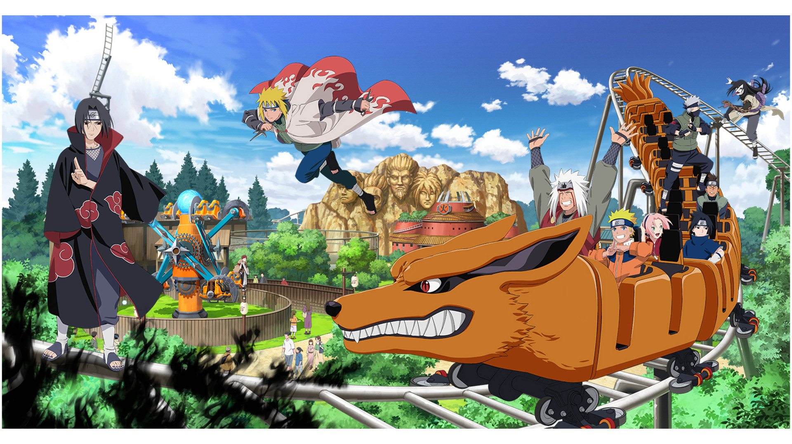
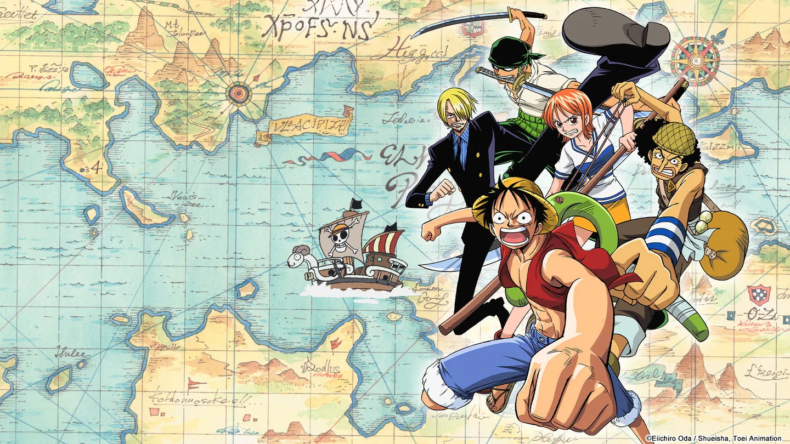

Mappatura degli Archetipi Narrativi nei Media Giapponesi
Progetto d'esame per il corso di Metodologie e tecniche di simulazione
Abstract del Progetto
Questo progetto esplora l'uso combinato di Knowledge Graphs (KGs) e Large Language Models (LLMs) per automatizzare l'estrazione e la formalizzazione della conoscenza nell'ambito della narratologia applicata ai media pop giapponesi (Anime e Manga).
L'obiettivo principale è colmare un significativo gap informativo individuato all'interno di Wikidata: la scarsa presenza di dati strutturati riguardanti gli archetipi narrativi dei personaggi. Il progetto si concentra su un campione mirato tratto da One Piece, Naruto e Death Note, usato per verificare la proprietà wdt:P9071 (character type) e testare una pipeline controllata di classificazione, validazione e formalizzazione RDF.
→ Segui la pipeline: dalla verifica del gap in Wikidata al benchmark LLM e alla formalizzazione RDF.

Pipeline & Vocabolario
La definizione dei passi metodologici, del campione mirato di personaggi e della proposta di estensione del vocabolario tramite RDF/RDFS.

Interrogazione SPARQL
Le query reali su Wikidata usate per verificare il gap, con DISTINCT, OPTIONAL, UNION, FILTER, REGEX, LIMIT e ORDER BY.
Prompt & LLM Benchmark
Il confronto tra Zero-shot, Few-shot e Zero-shot Chain-of-Thought su input minimi, con output di Gemini, ChatGPT e Copilot e normalizzazione manuale degli archetipi.